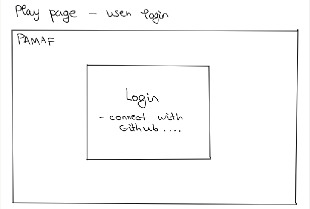
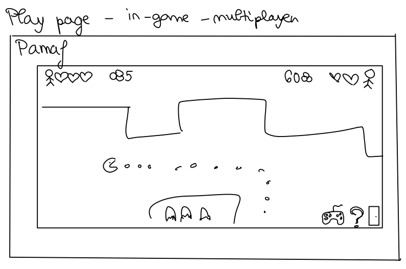
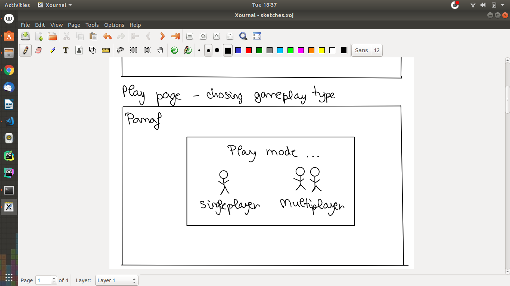
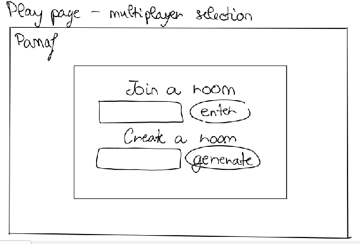
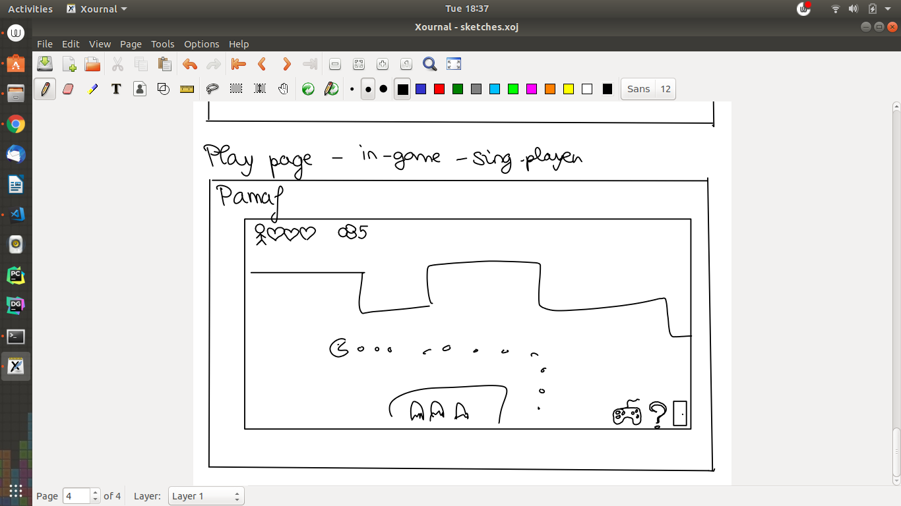
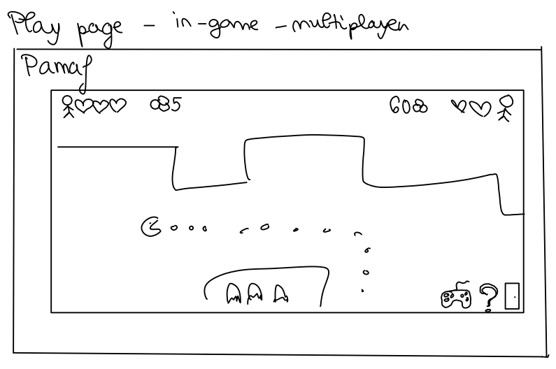
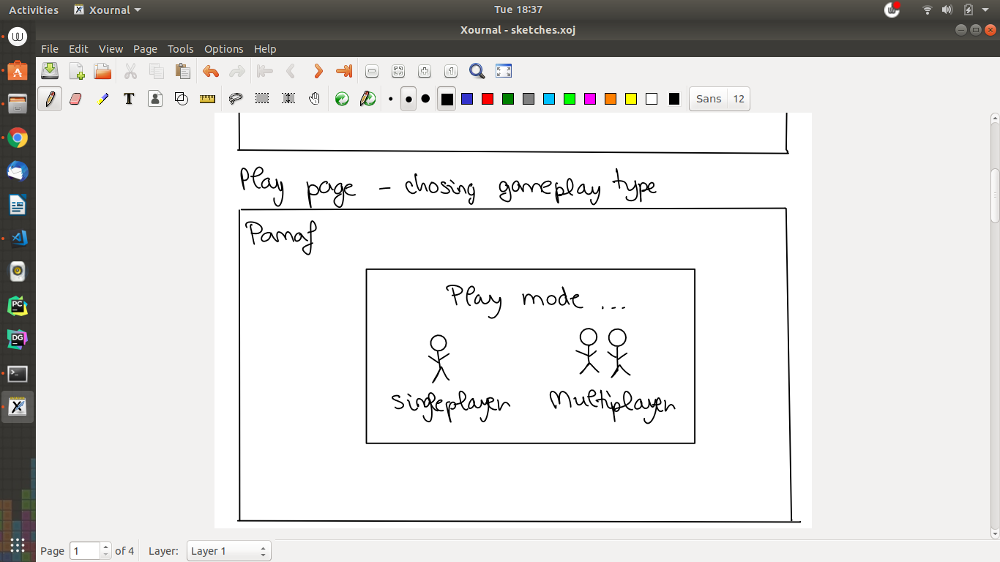
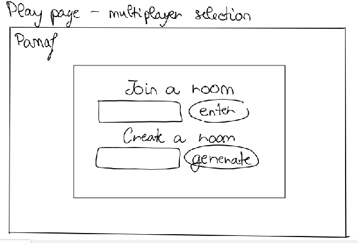
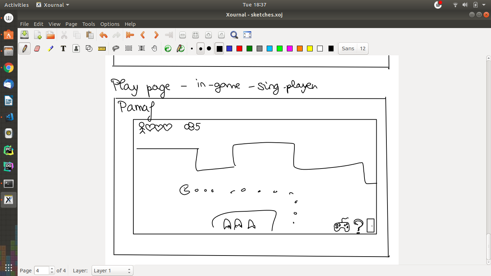

Scholarly HTML
- Authors
- Mihnea Bigu & Andra-Maria Oica & Vlad Romila
- Project source code
- GitHub
- Tags
- info, project, infoiasi, cliw, web, pamaf
Pamaf is a student project in which the player fights the other teachers in a Pac-man style. This document describes the main ideas/concepts, as well as the User Experience and the way in which the authors collaborated.
Games have always been a way in which people had fun. Originating with Pac-man, Pamaf wants to achieve the same greatness by adding a twist to the game: phantoms become teachers and our yellow little friend is represented by our profile picture. This way, students are able to face one of their biggest nightmares in a fun and addicting way.
We have started from the idea that we would like a simple interface in which the main point is for the players to get to the game as fast as possible. We did respect that, but we have also added a few other pages, like the History, Rules or Scoreboard. There is also a Contact page if you ever feel the need to reach us.
There have been ups and downs and a lot of changes during the first phases of development, but overall we think that we've done a good job on having a layout that is fast, good on the eye and also easy to understand and easy to navigate. Below are a few screenshots of our early development.

 







When the user first visits our webpage, he will be greeted with a welcoming message. Immediately, by clicking on the big Play button, he can join the fun and defeat his teachers. Alternatevily, he can visit the Rules, Scoreboard, History or the Contact pages, where he will find valuable information. The Rules page will show the player the rules of the game. In the Scoreboard page, he can view the leaderboard, who has the most points and so on and so forth. The History page provides the user with information regarding the History of Pac-man and its' origins. The Contact page is there to provide the user with the ability to send a message to the developers. By clicking on the Play button on the home page, the player will be asked to login by using one of the available platforms: Facebook, Instagram or GitHub. In the next phase, the player will have to choose between playing in the SinglePlayer mode or MultiPlayer. He can also adjust a few settings, or view the controls of the game in the Help section. After he starts playing, the goal of the game, as stated by the rules, is to gather as many points as possible without getting hit by an enemy.
The Source-Code can be accessed by visiting the project's GitHub page, located here. For development, we have created a new branch and each of us had speciffic tasks that had to be achieved during a convenient time-frame.